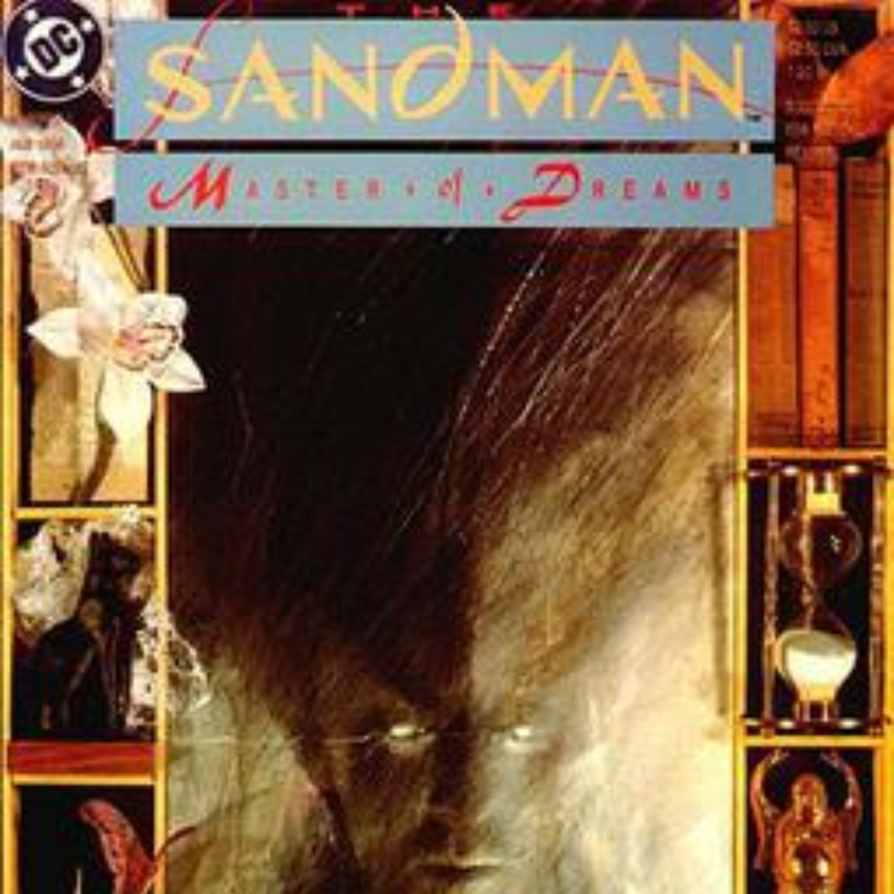
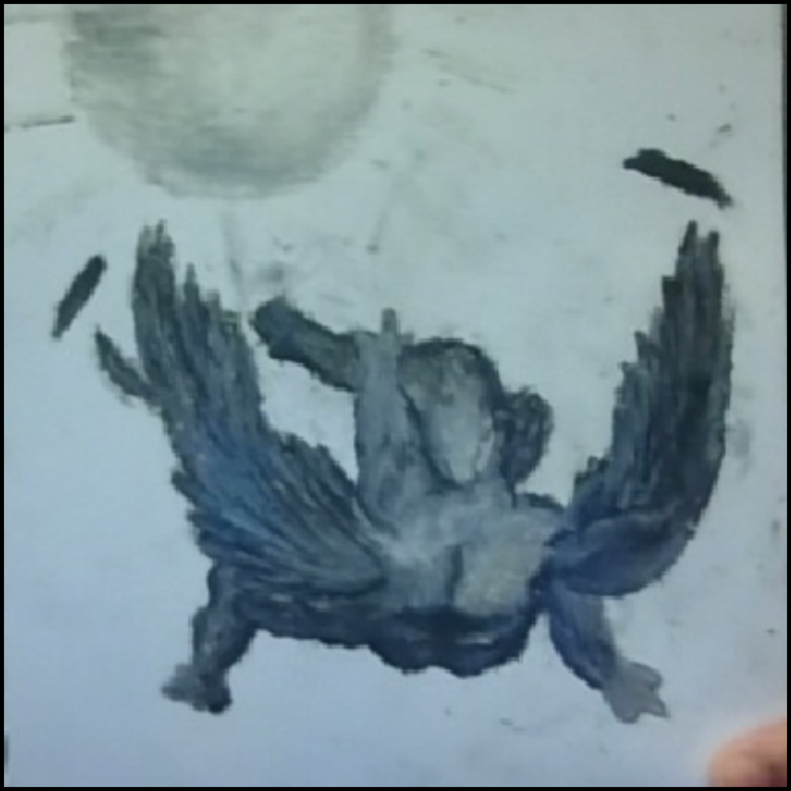
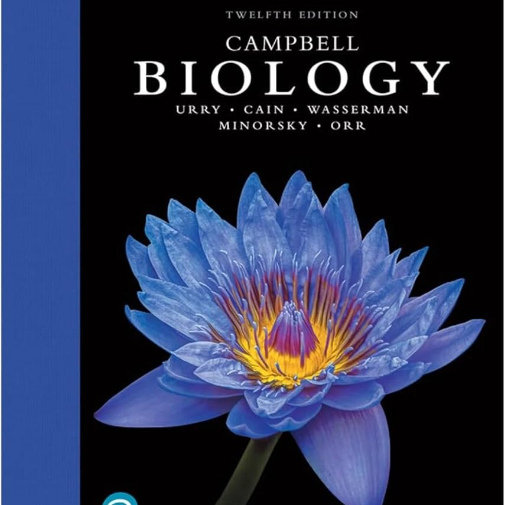

Comics
I enjoy reading and looking at media of any comic publisher, whether it be DC, Marvel, or Image. I have started to read comics recently such as the Long Halloween Series, Earth One, Invincible, etc.

I enjoy reading and looking at media of any comic publisher, whether it be DC, Marvel, or Image. I have started to read comics recently such as the Long Halloween Series, Earth One, Invincible, etc.

I enjoy creating art through a few mediums, mostly any sort of black pen, pencil, or paint. I usually create landscapes, wildlife sketches, fantasy scenes, and digital works. I haven't had much time to devote to this, but I try.

I had a huge interest in animals and plants since I was a child. It expanded from being a fanatic about animals as a child to appreciating local wilderness, fauna, and flora. I am in harmony whenever outdoors. I enjoy birdwatching, scouting, walking on trails whenever, occasionally visiting the zoo once in a while. I have an iNaturalist account, trying to record whatever fauna I find in this city.
I started to have an interest in the subject from around 4th grade. I think it stemmed from geography, understanding how people lived, what they believed in, what mistakes they committed, etc. My interest in the subject has led me to compete in extracurriculars such as UIL History and Current Events, History Bee, and NAQT quizbowl, where I am a history main player. My interest in the subject has waned over time, but I enjoy it occasionally.

I'm not as knowledgable in this subject as I am with history, but I'm trying to develop an interest and career in the subject. I'm not sure why, I don't even know why am I doing it, but I plan on it. I leaning towards biology mostly, but I had prior interests in paleontology, of which I am mostly ashamed of.